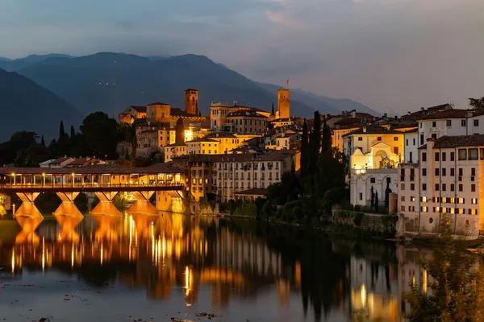

Home › Spirits › Veneto (Bassano del Grappa)
Veneto (Bassano del Grappa): Grappa

Photo: Edoardo Bortoli on Unsplash
Bassano del Grappa, at the foot of Monte Grappa, is the traditional centre of Italy's pomace brandy.
How it's made
Grappa is distilled from pomace and can only be made in Italy. It may be unaged (bianca) or aged in wood (invecchiata).
Grappa is distilled from the pomace, the skins, pulp and seeds left after pressing grapes. Most Veneto producers use steam or bain-marie pot stills so the pomace does not burn, while larger houses also use continuous column stills.
History
Farmers in northern Italy have long distilled what was left over from winemaking. In 1779 Bortolo Nardini opened a grappa distillery by the old wooden bridge in Bassano, and it still runs today as one of the oldest in Italy.
Ageing and label terms
Grappa giovane or bianca is unaged. Invecchiata means at least 12 months in wood, and riserva or stravecchia at least 18 months. Single-grape grappas carry the variety on the label, such as Prosecco, Amarone or Moscato.
Styles
Clear young grappas from red or white pomace, very aromatic single-variety grappas, and golden aged grappas with honey and vanilla notes.
Rules and protected names
Grappa is a protected name in the EU: it must be made in Italy from Italian pomace and bottled at least 37.5% abv. Grappa Veneta (or del Veneto) is a regional geographical indication.
How to serve and classic cocktails
Neat in a small tulip glass after dinner, young grappa slightly chilled. Locals add it to espresso (caffè corretto) or rinse the empty cup with it (resentin), and it can replace pisco in a sour.
With food
Aged cheeses like Asiago, dark chocolate, biscotti and other dry desserts.
Good to know
Despite the town's name, grappa does not come from Monte Grappa or Bassano; the word is thought to come from a local term for a bunch of grapes.
Producers
- Nardini
- Poli
- Bonollo
Bottles to try
Nardini Acquavite di Vinaccia Bianca
Clean and powerful: grape skins, herbs, flowers and pepper.
Strength: 50% · Age and cask: Unaged
Nardini opened in 1779 beside the wooden bridge in Bassano del Grappa and is often called Italy's oldest distillery. This clear grappa is bottled at full strength and is a classic of the town.
Serve: Neat, slightly chilled, after a meal
Poli Sarpa di Poli
Fresh and grapey: red berries, grape skins, hay and a light herbal finish.
Strength: 40% · Age and cask: Unaged
Made from Merlot and Cabernet pomace by the Poli family, who have distilled at Schiavon near Bassano since 1898. Sarpa means pomace in the local dialect; the family also runs a grappa museum in Bassano.
Serve: Neat and lightly chilled, or in a caffè corretto
Nardini Grappa Riserva 7 Anni Selezione Bortolo Nardini
Rich and mellow: dried fruit, vanilla, almond and spice.
Strength: 45% · Age and cask: 7 years, oak
From Italy's oldest grappa distillery, opened in 1779 beside the Ponte Vecchio in Bassano del Grappa. A long-aged grappa from pomace distilled in steam stills.
Serve: Neat after dinner, slightly cool
Andrea Da Ponte Vecchia Grappa di Prosecco
Soft and fruity: apple, pear, honey, vanilla and almond.
Strength: 42% · Age and cask: Barrel-aged in oak
Distilled from Prosecco grape pomace by a family distillery at Corbanese near Conegliano, active since the late 1800s. A smooth, oak-aged grappa.
Serve: Neat in a tulip glass after dinner
Nardini Mandorla
Grappa with sweet almond and cherry: marzipan nose, dry and strong on the palate.
Strength: 50%
Bortolo Nardini's grappa infused with almond and cherry distillates, made in Bassano del Grappa, where the family has run its riverside distillery and bar since 1779.
Serve: Chilled, or a splash in espresso
Poli Po' di Poli Morbida
Floral and grapey, with orange blossom, rose, peach and a soft, smooth finish.
Strength: 40% · Age and cask: At least 12 months in stainless steel, no wood
Made by the Poli family near Bassano del Grappa from the pomace of Fior d'Arancio and white Muscat grapes. Distilled in small batches in a bain-marie still, which keeps the delicate Muscat aromas.
Serve: Lightly chilled after dinner, in a tulip glass
Also a wine region: Veneto wine guide.
More brandy regions
Explore all spirits in the interactive guide
The Wine Reference newsletter
New wines, stories and career guides, one email a week at most.
Over 18s only. Unsubscribe any time with one click. Your email is stored securely by Kit and never shared.
Support The Wine Reference
This guide is free, with no paywall. If it helped you choose a bottle, you can buy me a glass and keep it growing.
🍷 Buy me a glass